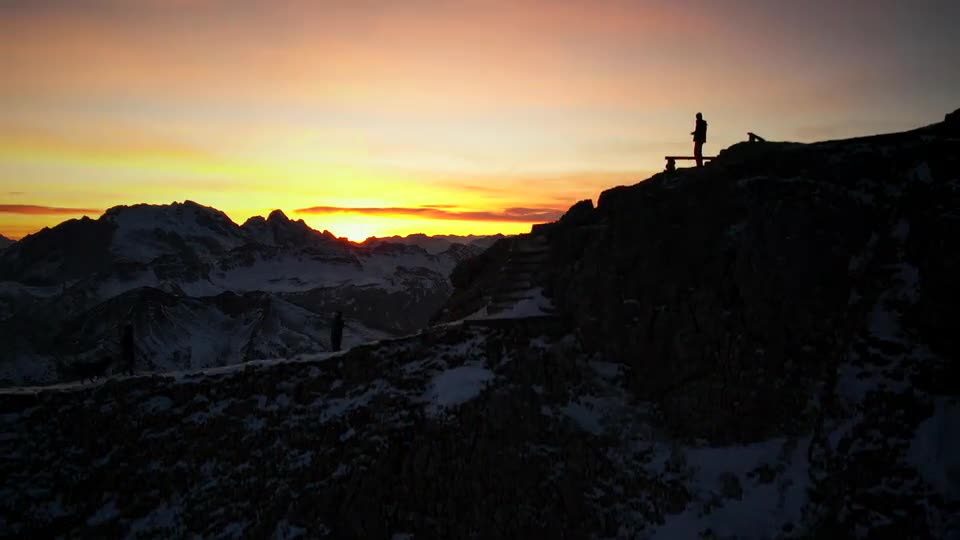

Lagazuoi 2,752 m
Dolomites, ItalyJanuary 2025

Drone footage shot around Rifugio Lagazuoi in the Dolomites, January 2025. Music: Vivaldi, Winter from The Four Seasons, performed by the U.S. Air Force Band (public domain).
Things I make when nobody is paying me to. Trips, films, and whatever else is holding my attention.
Dolomites, ItalyJanuary 2025

Drone footage shot around Rifugio Lagazuoi in the Dolomites, January 2025. Music: Vivaldi, Winter from The Four Seasons, performed by the U.S. Air Force Band (public domain).